2. 模拟科学实验
计算思维是一种通过抽象、问题分解、模式识别、算法设计、自动化和泛化来解决问题的思维方式，它能够将复杂的现实问题转化为可计算、可执行的步骤。在科学研究中常常需要借助程序进行辅助计算、模拟、预测等。通过计算机模拟，可以在虚拟环境中快速重复实验，验证假设，优化方案，并预测结果。这不仅节省了时间和资源，还有助于更好地理解问题的本质。
科学实验是科学研究的基础，通过实验可以验证理论、发现新现象和探索未知领域。随着计算机技术的不断发展，利用计算机模拟科学实验已成为一种重要的研究方法。Python作为一种通用的编程语言，具有丰富的科学计算和数据分析库，这为模拟科学实验提供了有力的支持。本章使用Python模拟“标记重捕法”的过程，来估计生物种群的大小。通过学习，体会计算思维在模拟科学实验领域的广泛前景。
2.1 需求分析
“标记重捕法”是一种用于估算野生动物种群数量的经典生态学方法。其基本原理是通过两次捕获并标记部分个体，然后根据重捕样本中标记个体的比例来推算整个种群的大小。首先，研究人员在第一次捕获中标记一定数量的个体并释放回原环境，经过一段时间后再次捕获，记录重捕样本中标记个体的数量。假设种群在两次捕获期间保持相对稳定，且标记不会影响个体的行为和生存，那么种群中标记个体的比例应与重捕样本中的比例相似。通过简单的比例计算，即可估算出种群的大致数量。尽管该方法在实际应用中可能受到各种因素的影响，但它仍然是一种简便且广泛应用的种群数量评估工具。
为了实现标记重捕法的模拟，Python程序需要具备以下功能：
- 模拟种群生成：生成一个虚拟的种群，并设定其初始大小。
- 标记过程模拟：在第一次捕获中随机标记一定比例的个体。
- 重捕过程模拟：在第二次捕获中随机选择一定数量的个体，并统计其中标记个体的数量。
- 种群数量估算：根据重捕样本中标记个体的比例，推算整个种群的大小。
- 结果展示与可视化：输出模拟结果，并可视化种群数量。
本案例通过模拟真实的研究过程，统计模拟结果，验证“标记重捕法”公式的准确性。
2.2 学习目标
1. 熟悉Python基础知识
首先对案例涉及到的Python基础知识进行回顾。包括：列表的使用、程序基本结构、库的使用、Matplotlib库进行数据可视化、函数定义等。
2. 掌握科学研究方法
使用计算机模拟科学实验有助于探索和理解复杂系统的行为，是科学研究方法的一个重要组成部分。通过计算机模拟验证科学实验，可以更全面理解科学现象、探索未知领域。
3. 提高数据分析能力
模拟实验将要解决的科学实验问题进行抽象，利用数据和算法模拟现实世界的实验过程。计算机模拟可以方便处理复杂且难以直接实验的问题，如核物理学和气象学的研究等。模拟实验还可以方便地改变实验条件，进行多次重复实验，这对于验证假设、发现新思路、预测未来等都很有帮助。
4. 促进跨学科学习
通过计算机跨学科模拟科学实验的案例，学习运用计算思维解决科学问题的方法。跨学科学习把来自不同学科的知识和技能结合起来，可以更全面的理解科学现象、探索未知领域。
本案例的“标记重捕法”涉及生态学、统计学、计算机科学等多个领域。通过案例的实现，体会计算思维与其他学科、科学研究的关联，能够将自己的专业知识与计算思维联系起来，在今后的学习中主动将计算思维应用到自己专业领域，理解计算思维对问题求解的意义。
2.3 环境要求
- Python环境
- Matplotlib库
2.4 相关知识
1. 列表
Python列表是一种灵活的数据结构，可以存储不同数据类型的数据。列表是包含0个或多个元素的有序序列，列表中的元素类型不限，可以是数值型、字符型、逻辑型等。同一个列表中的元素类型可以不同。列表中的元素也可以是另一个列表，或是元组，形成这些结构的嵌套。例如：
student1 = ["张三", 18, [99, 98, 100]]student1列表中包含了字符型数据“张三”，数值型数据18以及列表[99,98,100]。
列表的长度和内容都是可变的，可对列表中的元素进行增加、删除或修改。表3-1列举了列表常用的方法。
表2-1 列表常用方法
| 方法 | 功能描述 | 示例及输出 |
|---|---|---|
| append() | 在列表末尾添加一个元素 | my_list.append(5) |
| extend() | 将另一个列表（或任何可迭代对象）的元素添加到当前列表末尾 | my_list.extend([5, 6]) |
| insert() | 在列表的指定位置插入元素 | my_list.insert(1,2)（在索引 1 的位置插入元素 2） |
| remove() | 移除列表中第一个出现的指定元素 | my_list.remove(2) |
| pop(index) | 移除列表中指定位置的元素，并返回该元素的值 | my_list.pop(0) （移除索引为 0 的元素） |
| index() | 返回列表中指定元素的第一个匹配项的索引 | my_list.index(3) |
| count() | 返回列表中指定元素出现的次数 | my_list.count(3) |
| reverse() | 反转列表中元素的顺序 | my_list.reverse() |
| sort() | 对列表中的元素进行排序 | my_list.sort() |
| sorted() | 返回列表的一个已排序的副本，原列表不变 | sorted_list = sorted(my_list) |
| len() | 返回列表的长度 | length = len(my_list) |
| in | 判断一个元素是否存在于列表中 | 5 in my_list |
| not in | 判断一个元素是否不存在于列表中 | 5 not in my_list |
| iter() | 创建列表的迭代器 | iter_list = iter(my_list) |
| list() | 将其他可迭代对象转换为列表 | numbers = list((1, 2, 3)) |
例2-1：列表操作
my_list = ["red", "green", "blue", "white"] # 创建列表
my_list.append("black") # 添加元素，到末尾添加元素
my_list.insert(1, "pink") # 在索引为1的位置插入"pink"
first_element = my_list[0] # 获取第一个元素
last_element = my_list[-1] # 获取最后一个元素
my_list[0] = "orange" # 修改第一个元素
del my_list[0] # 删除索引为0的元素
last_element = my_list.pop() # 删除并返回列表的最后一个元素
my_list.sort() # 升序排序
my_list.sort(reverse=True) # 降序排序
my_list.reverse() # 反转列表
length = len(my_list) # 列表长度
# 遍历列表
for item in my_list:
print(item, end=" ")2. 程序基本结构
程序的基本结构有三类，分别是顺序结构、选择结构和循环结构。它们决定了代码块的执行顺序。
（1）顺序结构
顺序结构是最基本的控制结构，也是大多数程序的基础。顺序结构程序中的代码按照从上到下的顺序依次执行。顺序结构流程图如图2-1所示。
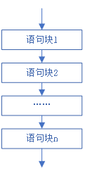
图2-1 顺序结构流程图
例2-2：求矩形的面积和周长(顺序结构)
# 从键盘接收用户输入的长和宽
length = float(input("请输入矩形的长: "))
width = float(input("请输入矩形的宽: "))
# 计算矩形的面积
area = length * width
print(f"矩形的面积是: {area}")
# 计算矩形的周长
perimeter = 2 * (length + width)
print(f"矩形的周长是: {perimeter}")运行结果：
请输入矩形的长: 5 请输入矩形的宽: 6.8 矩形的面积是: 34.0 矩形的周长是: 23.6
（2）选择结构
当需要分情况进行处理时，就需要使用选择结构。选择结构又称分支结构，是依据条件来选择执行路径。根据分支路径的多少分为：单分支结构、双分支结构和多分支结构。
• 单分支结构
单分支结构流程图如图2-2所示。单分支结构中如果条件为真，执行代码块中的代码；如果条件为假，就直接跳过代码块继续执行后续代码。
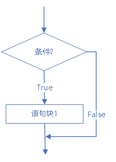
图2-2 单分支结构流程图
• 双分支结构
双分支结构流程图如图2-3所示。当条件表达式为真时，执行语句块1，否则执行语句块2。
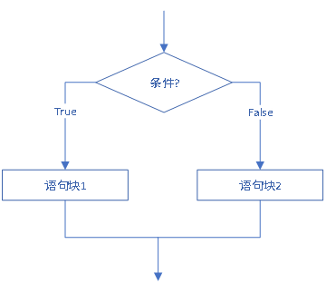
图2-3 双分支结构流程图
双分支语法结构如下：
if 条件表达式:
语句块1
else:
语句块2例2-3：根据输入的学生成绩，输出“通过”或“没有通过”。
score = eval(input("输入学生成绩："))
if score >= 60:
print("通过！")
else:
print("没有通过！")运行结果：
输入学生成绩：88 通过！
• 多分支结构
多分支结构流程图如图2-4所示。多分支结构使用if-elif-else语句来实现。如果表达式1为真，则执行语句块1，否则判断条件表达式2是否为真，如果为真则执行语句块2，……，如果所有条件都为假，则执行语句块n+1中的代码。
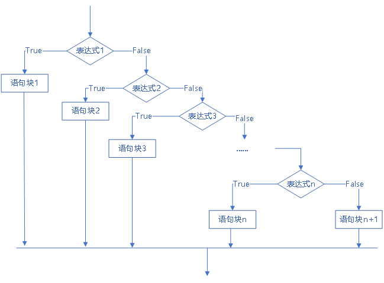
图2-4 多分支结构流程图
语法结构如下：
if 条件表达式1:
语句块1
elif 条件表达式2:
语句块2
……
elif 条件表达式 n:
语句块n
else:
语句块n+1例2-4：利用多分支结构，根据输入的百分制学生成绩，打印出“优秀、良好、中等、及格、不及格”等级。
# 从键盘接收用户输入的分数
score = float(input("请输入分数: "))
# 使用多分支结构判断成绩等级
if score >= 90:
grade = "优秀"
elif score >= 80:
grade = "良好"
elif score >= 70:
grade = "中等"
elif score >= 60:
grade = "及格"
else:
grade = "不及格"
# 打印成绩等级
print(f"该分数的成绩等级是: {grade}")运行结果：
请输入分数: 89 该分数的成绩等级是: 良好
（3）循环结构
循环结构是指重复执行某段代码块的控制流程结构。Python的循环结构主要包括“for循环”和“while循环”。通常循环次数确定，使用 “for循环”；当循环次数不确定时，使用“while循环”。在遍历数据集合或处理重复任务时使用循环结构简单而高效。
• for循环
“for循环”主要用于遍历序列（如列表、元组、字符串等）或其他可迭代对象，通过在序列中迭代每个元素，执行指定的语句块。“for循环”流程图如图2-5所示。
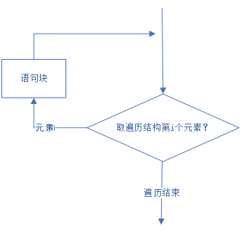
图2-5 循环结构流程图
“for循环”的语法结构如下：
for <循环变量> in <遍历结构>:
循环体语句块例3-5：输出购书清单中每一本书的名称和价格。
# 定义购书清单列表
book_list = [
{"title": "Python编程", "price": 99.00},
{"title": "深度学习", "price": 66.00},
{"title": "机器学习实战", "price": 86.00},
{"title": "人工智能", "price": 69.00}
]
# 使用for循环遍历购书清单
for book in book_list:
print(f"书名: {book['title']}, 价格: {book['price']}元")运行结果：
书名: Python编程, 价格: 99.0元 书名: 深度学习, 价格: 66.0元 书名: 机器学习实战, 价格: 86.0元 书名: 人工智能, 价格: 69.0元
“遍历结构”可以是任何可迭代的元素，如列表、元组、字符串等，也常用range()函数形成的数字序列。range(start,stop[,step])函数返回从start到stop（不包含stop）步长为step的整数序列。其中start为开始的数值，默认从0开始 ；stop为结束的数值，生成的序列不包括该值；step步长，默认为1。
例如：求100以内的奇数和。
sum = 0 # 初始化总和为0
for i in range(1, 100, 2): # range生成1到100步长为2的奇数序列
sum += i # 将当前数字加到总和上
print(f"1+3+5+……+99={sum}")运行结果：
1+3+5+……+99=2500
• while循环
“while循环”用于在满足特定条件的情况下重复执行一组语句。流程图如图2-6所示。
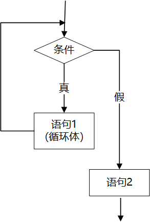
图2-6 while循环结构流程图
“while循环”在执行时先检查条件，如果条件为真，则执行循环体语句块，执行完毕后再次检查条件，只要条件表达式为真，就执行循环体，直到条件为假时退出循环。
while循环的语法结构如下：
while 条件表达式:
循环体语句例如：求100以内的偶数和。
# 初始化变量
s = 0
i = 2 # 偶数从2开始
# 使用while循环计算100以内的偶数和
while i <= 100:
s += i
i += 2 # 每次循环增加2，以保证是偶数
print(f"2+4+6+……+100={s}")运行结果：
2+4+6+……+100=2550
3. 库的使用
在Python中经常听到“库”、“模块”、“包”，这三个概念在含义上是有区别的，但在引用方法上都一样，因此本书不做概念上的区分统一称为库。Python中有丰富的可以实现不同功能的库，这些库可以分为标准库和第三方库。标准库是在安装Python解释器时默认安装的库，如：math、random、turtle等，使用时直接导入。第三方库是由Python开发者编写并在PyPi平台上开源的文件，第三方库需要先安装再导入。
（1）安装第三方库
安装第三方库可以在线安装也可以离线安装。离线安装时先下载第三方库文件，然后按照相关说明进行安装。在线安装使用pip工具进行安装，如果安装了Anaconda，还可以用conda命令进行安装。下面以pip工具为例说明在线安装第三方库的方法。
-
打开命令行界面：
- 在 Windows 上，打开“命令提示符”或“PowerShell”。
- 在 macOS 或 Linux 上，打开“终端”。
-
使用pip 安装库
pip install 库名
因为PyPI服务器在国外，有时在线安装比较慢，可以使用国内镜像安装。
pip install 库名 -i 国内镜像地址
常用的国内镜像地址有：
- 清华大学： https://pypi.tuna.tsinghua.edu.cn/simple
- 中国科学技术大学 : https://pypi.mirrors.ustc.edu.cn/simple
- 豆瓣：http://pypi.douban.com/simple/
- 阿里云：http://mirrors.aliyun.com/pypi/simple/
例如：安装matplotlib库
pip install matplotlib
# 或使用清华镜像安装matplotlib
pip install matplotlib -i https://pypi.tuna.tsinghua.edu.cn/simple（2）导入库模块
常用的导入库模块的方式有下面三种。
-
方式1：import <模块名>
调用：<库名>.<函数名>(<函数参数>)
特点：这种方式引入了整个库，包括其中的变量和函数。不会出现函数重名问题，但由于每个函数都要写库名，程序代码会比较繁琐。
import math print(math.ceil(2.8)) #向上取整，值为3
-
方式2：from <模块名> import <函数名>
调用：<函数名>(<函数参数>)
特点：这种方法引入了模块中某些函数和变量。调用其中的变量或模块时只需用函数和变量的名称，不需要带模块名，所以代码简单。但是在引用多个模块的情况下可能会存在函数重名问题。如果需要引用模块中所有函数，可以用from <模块名> import *的形式。
from math import ceil print(ceil(2.8)) #向上取整，值为3
-
方式3：import<模块名>as<别名>
调用：<别名>.<函数名>(<函数参数>)
特点：引入了整个模块，并给模块以别名，在后续程序调用时使用别名即可。这种方法将繁琐复杂的模块名用别名代替，既简化了代码书写，又避免了函数重名。
import matplotlib.pyplot as plt x = [0, 1, 3, 5, 7] y = [0, 2, 4, 6, 10] plt.plot(x, y, 'r--o') plt.show()
4. random库
随机数在模拟实验、数据采样、密码学等领域中都有重要的应用。random库是Python中用于生成随机数的标准库，该库提供了多种方法来生成不同类型的随机数，包括随机整数、随机浮点数以及从序列中随机选择元素等。random库常用方法见表2-2所示。
表2-2 random库常用方法
| 方法名称 | 操作描述 | 示例代码 |
|---|---|---|
| random() | 返回0到1之间的随机浮点数 | random.random() |
| uniform(a,b) | 返回[a,b)之间随机浮点数 | random.uniform(-1,1) |
| randint(a,b) | 返回[a,b]之间的随机整数 | random.randint(1,10) |
| randrange(start,stop[,step]) | 返回[start,stop)之间，按step变化的随机整数 | random.randrange(0,8,2) |
| choice(sequence) | 从非空序列中随机选一个元素 | random.choice(['TV','PC']) |
| choices(population,weights=None,k=1) | 根据权重weights从population中选择k个元素 | random.choices(['TV','PC'],weights=[0.2,0.8],k=10) |
| sample(population,k) | 从population中随机抽取k个不同的元素 | random.sample([1,2,3,4,5],k=3) |
| shuffle(x[,random]) | 将序列x中的元素随机打乱顺序 |
li=[3,5,2,1,4] random.shuffle(li) |
| seed(a=None,version=2) | 初始化随机数生成器的种子 | random.seed(5) |
例如：生成随机浮点数。
import random # 导入random模块
random.uniform (1,5) # 生成一个1到5之间的随机浮点数5. Matplotlib库
Matplotlib是Python的一个绘图库，主要用于数据可视化。Matplotlib提供了多种高质量的图形形式，包括折线图、柱状图、散点图、饼图等。Matplotlib的核心是pyplot模块，该模块常用于绘制各种静态、动态和交互式的二维图形。
- matplotlib.pyplot函数式绘图的基本步骤
-
导入matplotlib.pyplot
import matplotlib.pyplot as plt
-
设置中文字体
在 Matplotlib 中，如果遇到中文乱码问题，通常是因为字体设置不当或者没有正确加载中文字体。首先确保安装了支持中文的字体，字体可以是“matplotlib\mpl-data\fonts”下的字体或者是“Windows\Fonts”下的字体，使用plt.rcParams["font.family "]指定中文字体。
# 设置中文字体 plt.rcParams['font.family'] = ['SimHei'] # 使用黑体 plt.rcParams['axes.unicode_minus'] = False # 解决负号显示问题
常用中文字体名称的中英文对照表见表2-3所示。
表2-3 中英文字体名称对照表
字体名称 字体英文表示 字体名称 字体英文表示 宋体 SimSun 仿宋 FangSong 黑体 SimHei 幼圆 YouYuan 楷体 KaiTi 华文宋体 STSong 微软雅黑 Microsoft YaHei 华文黑体 STHeiti 隶书 LiSu 华文仿宋 STFangsong 华文楷体 STKaiti 华文隶书 STLiti -
准备数据
准备用于绘制图表的数据。
-
绘制图形
使用各种绘图方法（如plt.plot，plt.scatter，plt.bar……）来绘制图形。pyplot常用绘图方法见表2-4所示。
表2-4 plt常用方法
方法名称 操作描述 示例代码 plot() 绘制二维图表，如折线图、散点图等 plt.plot(x, y) scatter() 绘制散点图 plt.scatter(x, y) bar() 绘制条形图 plt.bar(x, y) hist() 绘制直方图 plt.hist(x, bins=n) boxplot() 绘制箱形图 plt.boxplot(data) pie() 绘制饼图 plt.pie(sizes, labels, colors) imshow() 显示图像数据 plt.imshow(A, cmap='gray') fill_between() 在两个函数之间填充区域 plt.fill_between(x, func1, func2, color) plot_date() 绘制带有日期标签的图表 plt.plot_date(x, y, fmt='-') errorbar() 绘制带有误差线的图表 plt.errorbar(x, y, yerr=None, fmt='none') subplot() 创建一个子图布局 plt.subplot(2, 2, 1) figure() 创建一个新的图形对象 plt.figure(figsize=(8, 6)) clf() 清除当前图形 plt.clf() cla() 清除当前轴上的图形 plt.cla() -
添加图表元素
图表元素包括图表标题、坐标轴标签、坐标轴标题、图例等，添加图表元素常用方法见表2-5。
表2-5 图表元素常用方法
方法名称 描述 示例代码 title() 设置图表标题 plt.title('ChartTitle') xlabel() 设置X轴标签 plt.xlabel('XAxisLabel') ylabel() 设置Y轴标签 plt.ylabel('YAxisLabel') legend() 设置图例 plt.legend(['1','2']) xlim() 设置X轴的范围 plt.xlim(0,5) ylim() 设置Y轴的范围 plt.ylim(0,35) grid() 设置是否显示网格 plt.grid(True) show() 显示绘制的图像 plt.show() savefig() 保存图形到文件 plt.savefig('plot.png') -
保存/显示图表
plt.savefig()/plt.show()
如果需要同时保存和显示图表时，保存图表要放在显示图表之前，否则保存的图表是空白的。
- plt.plot( ) 绘制二维图形
plt.plot()是 Matplotlib 库中用于绘制二维图形的核心函数之一。支持丰富的参数和样式设置，适合绘制折线图、散点图等二维图形。
plt.plot(x,y,[可选参数])，这里，x和y是要绘制的数据点的二维数组。可选参数见表3-6所示。
表3-6 可选参数
| 参数名称 | 描述 | 示例代码 |
|---|---|---|
| color | 线条或标记的颜色 | plt.plot(x,y,color='red')或plt.plot(x,y,c='green') |
| marker | 数据点的标记样式 | plt.plot(x,y,marker='o') |
| linewidth或lw | 线条的宽度 | plt.plot(x,y,linewidth=1.0)或plt.plot(x,y,lw=1.0) |
| linestyle或ls | 线条的样式 | plt.plot(x,y,linestyle='--')或plt.plot(x,y,ls='--') |
| label | 用于图例的标签 | plt.plot(x,y,label='MyLine') |
其中常用的“数据点的标记样式”和“线条的样式”见表3-7 所示。
表3-7 常用标记和线条样式
| 标记样式 | 描述 | 标记样式 | 描述 |
|---|---|---|---|
| '.' | 圆点 | '1' | 竖线 |
| ',' | 像素点 | '2' | 双竖线 |
| 'o' | 圆圈 | 's' | 方块 |
| 'v' | 倒三角形 | 'p' | 星号 |
| '^' | 三角形 | '*' | 填充星号 |
| '<'< /td> | 左三角形 | 'h' | 菱形 |
| '>' | 右三角形 | 'H' | 填充菱形 |
| '+' | 加号 | 'x' | 叉号 |
| 'D' | 减号（倒梯形） | 'd' | 减号（三角形） |
| '_' | 横线 | '|' | 竖线 |
例2-6：绘制销售部门季度销售量折线图。
# 绘制两个销售部的四个季度“销售量”折线图，其中“销售一部”数据用红色圆点直线表示，“销售二部”数据用蓝色小叉虚线表示。
import matplotlib.pyplot as plt
# 设置中文字体
plt.rcParams['font.family'] = ['SimHei']
plt.rcParams['axes.unicode_minus'] = False
# 数据
x = ["第一季度", "第二季度", "第三季度", "第四季度"]
y1 = [2, 11, 12.5, 19] # 销售一部
y2 = [5, 6.8, 19, 19] # 销售二部
# 绘制折线图
plt.plot(x, y1, color='red', linestyle='-', marker='o', label='销售一部')
plt.plot(x, y2, color='blue', linestyle='--', marker='x', label='销售二部')
# 添加标题和标签
plt.title('部门季度产品销量')
plt.xlabel('季度')
plt.ylabel('产品销量（万件）')
# 显示图例
plt.legend()
# 设置坐标轴范围
plt.xlim(0, 3) # X 轴范围
plt.ylim(0, 20) # Y 轴范围
# 显示网格
plt.grid(True)
# 保存图形
plt.savefig('sales_plot.png')
# 显示图形
plt.show()效果如图2-7所示。
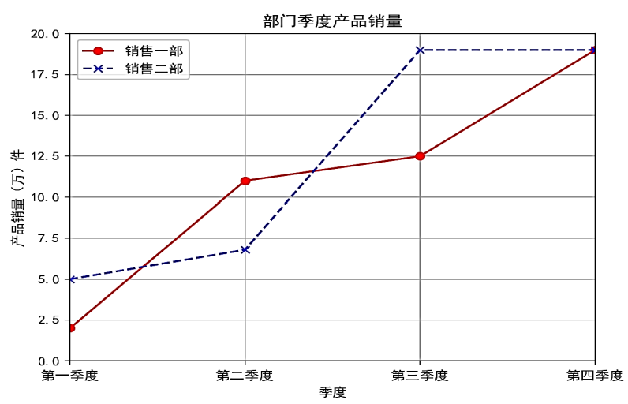
图2-7 各部门每季度产品销量图
（3）plt.subplots( )创建子图布局展示多个图表
利用plt.subplots( )函数创建子图布局，可以将一个大的画布分成多块子画布，每个子画布中显示一个图表。subplots函数语法如下：
plt.subplots(nrows, ncols, figsize=None, dpi=None, facecolor='w', edgecolor='k')其中参数含义见表2-8所示。
表2-8 subplots函数参数
| 参数 | 类型 | 作用 | 示例 |
|---|---|---|---|
| nrows | 整数 | 设置子图的行数 | nrows=2 |
| ncols | 整数 | 设置子图的列数 | ncols=3 |
| figsize | 元组 (宽度, 高度) | 设置整个画布的尺寸，单位为英寸 | figsize=(10, 6) |
| dpi | 整数 | 设置图像的分辨率（每英寸点数） | dpi=300 默认100 |
| facecolor | 颜色字符串或 RGB 颜色代码 | 设置画布的背景颜色 | facecolor='w' 默认白色 |
| edgecolor | 颜色字符串或 RGB 颜色代码 | 设置画布的边框颜色 | edgecolor='k' 默认黑色 |
| sharex | 布尔值或 'all'/'row'/'col' | 控制子图是否共享 x 轴。sharex=True 使所有子图共享 x 轴，sharex='row' 使行内共享，sharex='col' 使列内共享 | sharex='row' 默认False |
| sharey | 布尔值或 'all'/'row'/'col' | 控制子图是否共享 y 轴。sharey=True 使所有子图共享 y 轴，sharey='row' 使行内共享，sharey='col' 使列内共享 | sharey='col' 默认False |
| tight_layout | 布尔值 | 启用后自动调整子图布局，防止标签重叠 | tight_layout=True 默认False |
`fig, (ax1, ax2) = plt.subplots(1, 2, figsize=(12, 6))` 表示创建12x6 英寸包含两个子图的图形，返回 fig（图形对象）和 ax1、ax2（两个子图对象）。
例2-7：绘制“各类别图书销量占比”饼图以及“利润”柱形图。
# 分析：创建包含两个子图的图表。在第一个子图中，使用ax1.pie()绘制饼图，展示各类别图书销量占比；
# 在第二个子图中，使用ax2.bar()绘制柱状图，展示各类别图书利润分布。
# 导入库
import matplotlib.pyplot as plt
# 设置中文字体
plt.rcParams['font.family'] = ['SimHei']
plt.rcParams['axes.unicode_minus'] = False
# 数据存储为字典
data = {
"categories": ['文学', '经济学', '哲学', '自然科学', '医药卫生'],
"sales": [120, 150, 130, 160, 200], # 各类别图书销量
"profit": [30, 40, 35, 45, 60] # 各类别图书利润
}
# 创建子图布局
fig, (ax1, ax2) = plt.subplots(1, 2, figsize=(12, 6))
# 在第一个子图中绘制饼图
ax1.pie(data["sales"], autopct='%1.1f%%', startangle=90,
colors=['#ff9999', '#66b3ff', '#99ff99', '#ffcc99', '#c2c2f0'],
shadow=True, explode=(0.05, 0.05, 0.05, 0.05, 0.05))
ax1.set_title('各类别图书销量占比')
ax1.legend(data["categories"], title="图书类别", loc="center left", bbox_to_anchor=(1, 0.5))
# 在第二个子图中绘制柱状图
ax2.bar(data["categories"], data["profit"], color='skyblue', label='利润')
ax2.set_title('各类别图书利润分布')
ax2.set_xlabel('图书类别')
ax2.set_ylabel('利润（万元）')
ax2.legend() # 显示图例
ax2.grid(True)
# 为整个图形添加标题
fig.suptitle("图书销量及利润", size=18)
# 调整布局并显示
plt.tight_layout()
plt.savefig("result.png")
plt.show()效果如图2-8所示。
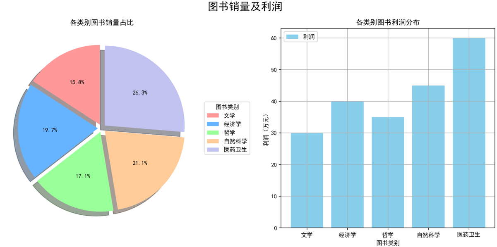
图2-8创建子图分布
6. 函数
当某些功能模块需要在不同项目或者同一项目的不同模块中重复使用时，可以将这些模块封装为函数，在需要的地方调用即可。函数可以实现代码复用，提高开发效率。
（1）函数定义
def 函数名(形式参数(0个或多个)):
函数体
return 返回值形式参数只代表参数的个数、顺序与类型。形式参数可以没有，也可以有多个，多个形式参数用逗号进行分隔。return 语句用来传递返回值。函数可以有返回值，也可以没有返回值。没有return语句的函数会在执行完函数体的最后一条语句后自动返回None。返回值有多个时，中间用逗号隔开，返回结果可按顺序赋值给多个变量，返回值可以赋给一个变量或者作为表达式的一部分。
（2）函数调用
函数名(实际参数(0个或多个))例如：定义函数，实现任意两个数的加法运算。
# 函数定义
def add(number1, number2):
result = number1 + number2
return result
# 函数调用
result = add(3, 5)
print(result) # 输出：82.5 案例目标
标记重捕法
标记重捕法是一种生态学中常用的种群数量估计方法。其基本思路是：首先捕捉一定数量的个体并进行标记，然后将这些标记个体放回原环境中。经过一段时间后，再次捕捉一定数量的个体，统计其中被标记个体的比例，从而估算整个种群的规模。
计算公式：
其中：𝑁表示种群密度；X表示第一次捕捉并标记的个体数量；Y表示第二次捕捉的个体数量；Z表示第二次样本中被标记的个体数（重新被捕捉的个体数）。即：N=第一次捕捉并标记的个数×第二次捕捉的个数/第二次捕捉到的带有标记的个数。
例如，在花园里有很多蝴蝶，第一次捕捉40只蝴蝶，给它们做上标记，放回花园；经过一段时间，重新捕捉80只蝴蝶，假设重捕后的蝴蝶中有16只蝴蝶带有标记，那么花园里蝴蝶的总数N为：N=40×80/16=200只蝴蝶。
案例目标
本案例旨在通过Python模拟标记重捕法的过程，验证是否可以使用公式N=X×Y/Z来估计一个生物种群的规模。即通过模拟科学实验，验证由该公式计算得出的生物种群数量是否与假设的种群数量相近。
2.6 案例实现
标记重捕法思路如图2-9所示。
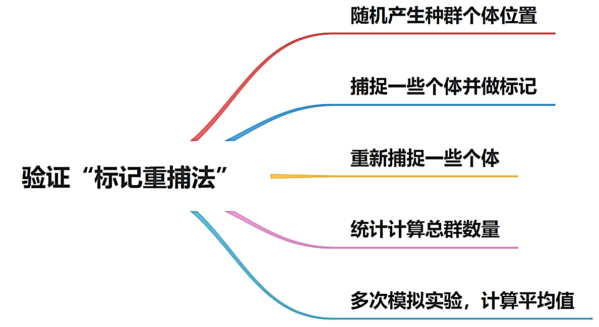
图2-9 求解思路
1. 模拟种群环境
假设调查区域有N只蝴蝶，且个体均匀随机分布。蝴蝶分布的位置坐标可以用random.uniform(a,b)来模拟。下面模拟N=1000只蝴蝶的位置，用xList保存所有横坐标，yList保存所有纵坐标，使用循环生成N只蝴蝶的位置坐标。
例2-8：模拟种群环境
import random
import matplotlib.pyplot as plt
# 指定中文字体
plt.rcParams["font.sans-serif"] = "SimHei" # 中文黑体
plt.rcParams['axes.unicode_minus'] = False # 解决保存图像时负号'-'显示为方块的问题
N = 1000 # 种群数量
# 将随机产生的个体位置的横、纵坐标分别保存至xList、yList列表
xList = []
yList = []
for i in range(N):
x = random.uniform(-1, 1)
y = random.uniform(-1, 1)
xList.append(x)
yList.append(y)
# 可视化种群位置
plt.plot(xList, yList, 'bo')
plt.title("模拟种群")
plt.show()运行上述代码后，模拟的蝴蝶种群分布结果如图 2-10所示。
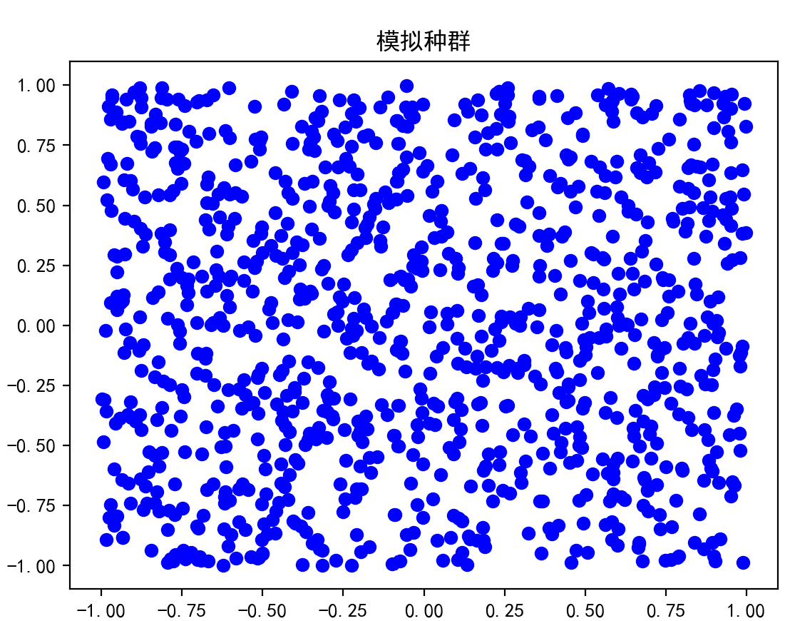
图2-10 模拟生物种群
2. 第一次捕捉个体并做标记
假设每个个体有 20% 的概率被捕捉到。使用random.uniform(0, 1)生成一个 0 到 1 之间的随机数，若该数小于等于 0.2，则认为该个体被捕捉到。将第一次捕捉到的个体的横、纵坐标分别存储在xList1和yList1列表中，未被捕捉到的个体则存储在xList2和yList2列表中。
第一次捕捉个体流程图如图2-11所示。
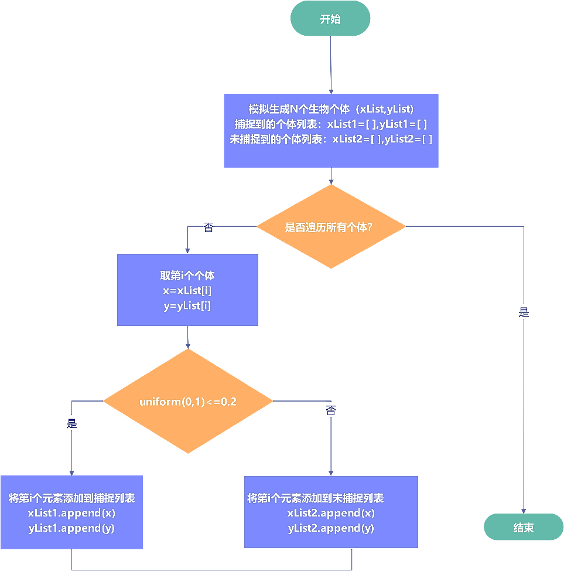
图2-11 第一次捕捉模拟流程图
例2-9：第一次捕捉
# 第一次捕捉并标记（需先运行例2-8模拟种群环境生成xList和yList）
xList1 = [] # 被捕捉到的个体
yList1 = []
xList2 = [] # 未被捕捉到的个体
yList2 = []
for i in range(N):
if random.uniform(0, 1) <= 0.2:
xList1.append(xList[i])
yList1.append(yList[i])
else:
xList2.append(xList[i])
yList2.append(yList[i])
# 可视化种群位置，被标记的个体与未被标记的个体使用不同的颜色区分
plt.plot(xList1, yList1, 'ro') # 标记的为红色
plt.plot(xList2, yList2, 'bo') # 未标记的为蓝色
plt.legend(['被捕捉', '未被捕捉'])
plt.title("第一次捕捉的结果")
plt.show()第一次捕捉后，将捕捉到的个体以红色标记，没有被捕捉到的个体用蓝色表示，可视化模拟结果如图2-12所示。
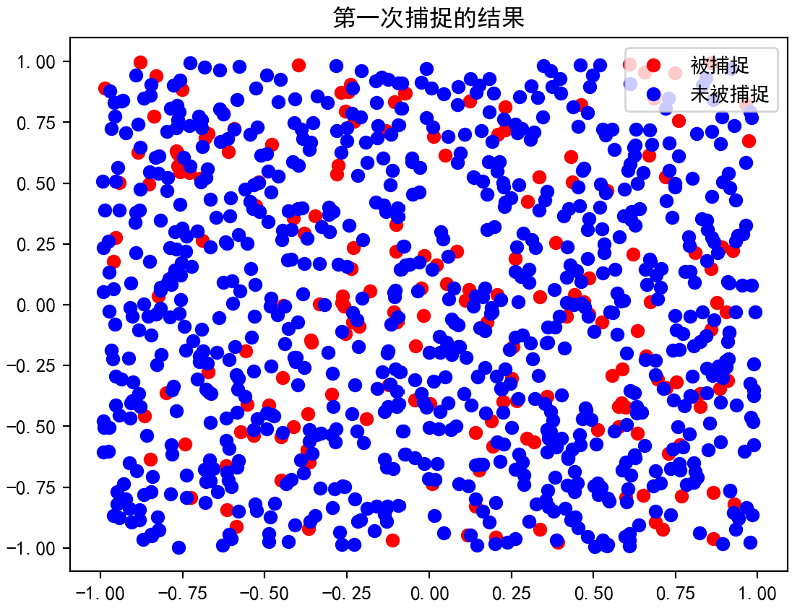
图2-12 第一次捕捉结果
3. 有放回地重新捕捉
在第一次捕捉并标记后，将捕捉到的个体放回原环境中。经过一段时间后，再次进行捕捉。假设每个个体仍有 20% 的概率被捕捉到。第二次捕捉后，所有个体被分为四类：
- 第一次被捕捉且第二次被捕捉的个体。
- 第一次被捕捉但第二次未被捕捉的个体。
- 第一次未被捕捉但第二次被捕捉的个体。
- 第一次未被捕捉且第二次未被捕捉的个体。
为了简化计算，将第二次未被捕捉的个体归为一类。如图 2-13所示。
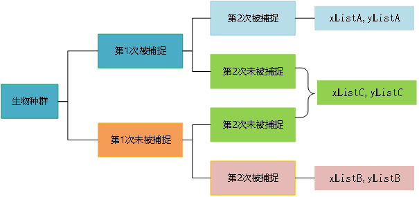
图2-13 标记重捕法示意图
例2-10：有放回地第二次捕捉
# 有放回地第二次捕捉（需先运行第一次捕捉代码）
xListA = [] # 重捕且被标记的个体
yListA = []
xListB = [] # 重捕且未被标记的个体
yListB = []
xListC = [] # 未重捕的个体
yListC = []
# 记录已标记的个体中再次被捕捉的情况
for i in range(len(xList1)):
if random.uniform(0, 1) <= 0.2:
xListA.append(xList1[i])
yListA.append(yList1[i])
else:
xListC.append(xList1[i])
yListC.append(yList1[i])
# 记录未标记的个体中再次被捕捉的情况
for i in range(len(xList2)):
if random.uniform(0, 1) <= 0.2:
xListB.append(xList2[i])
yListB.append(yList2[i])
else:
xListC.append(xList2[i])
yListC.append(yList2[i])
# 可视化显示种群位置
plt.plot(xListA, yListA, 'ro') # 重捕且被标记：红色圆点
plt.plot(xListB, yListB, "b^") # 重捕未被标记：蓝色三角形
plt.plot(xListC, yListC, "g*") # 未重捕：绿色星号
plt.legend(['重捕且被标记','重捕未被标记','未重捕'])
plt.title("第二次捕捉的结果")
plt.show()重新捕捉后生物种群分布情况如图2-14所示。
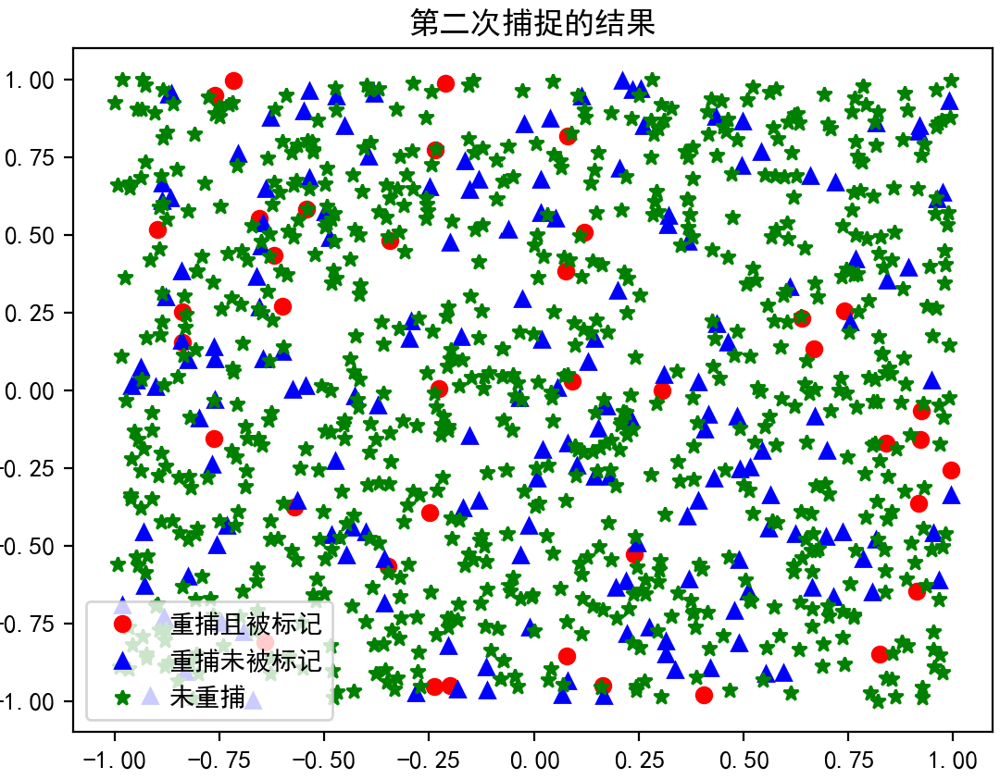
图2-14 重捕结果示意图
4. 计算种群数量
根据标记重捕法公式，种群数量N可以通过下面公式计算：
由上面的模拟过程可知:
- 第一次捕捉个数 = len(xList1)
- 第二次捕捉个数 = len(xListA) + len(xListB)
- 第二次捕捉到的带有标记的个数 = len(xListA)
计算种群数量的代码如下：
# 计算种群数量
n = len(xList1) * (len(xListA) + len(xListB)) / len(xListA)
print(n)运行上述代码后，程序会输出一个1000 左右的数值。但是由于单次实验具有偶然性，为了使结果更具说服力，需要进行多次模拟实验，并将多次实验的结果取平均值。
5. 多次模拟实验并可视化
（1）多次模拟实验
将一次模拟实验的过程封装为一个函数，并通过循环多次调用该函数，将每次的结果存储在列表中。最后计算这些结果的平均值作为实验的预测结果。
多次模拟实验的核心代码段：
import random
import matplotlib.pyplot as plt
# 函数定义：
def marking_recapture():
# 标记重捕法模拟过程（整合前面步骤）
N = 1000
xList = [random.uniform(-1, 1) for _ in range(N)]
yList = [random.uniform(-1, 1) for _ in range(N)]
# 第一次捕捉
xList1 = []
yList1 = []
xList2 = []
yList2 = []
for i in range(N):
if random.uniform(0, 1) <= 0.2:
xList1.append(xList[i])
yList1.append(yList[i])
else:
xList2.append(xList[i])
yList2.append(yList[i])
# 第二次捕捉
xListA = []
yListA = []
xListB = []
yListB = []
xListC = []
yListC = []
for i in range(len(xList1)):
if random.uniform(0, 1) <= 0.2:
xListA.append(xList1[i])
yListA.append(yList1[i])
else:
xListC.append(xList1[i])
yListC.append(yList1[i])
for i in range(len(xList2)):
if random.uniform(0, 1) <= 0.2:
xListB.append(xList2[i])
yListB.append(yList2[i])
else:
xListC.append(xList2[i])
yListC.append(yList2[i])
# 计算种群数量（避免除以零）
if len(xListA) == 0:
return marking_recapture() # 重新模拟
n = len(xList1) * (len(xListA) + len(xListB)) / len(xListA)
return n
# 用循环进行多次模拟：
n_sim = int(input("请输入要模拟的次数:"))
result = []
for i in range(n_sim):
result.append(marking_recapture())
average = sum(result) / n_sim
print(f"经过 {n_sim} 次有效模拟，估计的种群数量平均值为: {average:.0f}")运行上述代码后，程序会输出多次模拟实验的平均值。
请输入要模拟的次数：1000
经过 1000 次有效模拟，估计的种群数量平均值为: 1003
（2）可视化实验结果
为了更直观地展示多次模拟实验的结果，将其绘制成折线图，并在图中标出实验结果的平均值。最终结果保存为 “multiple_simulations.png”。
重点代码片段：
# 可视化多次模拟结果
plt.rcParams["font.sans-serif"] = "SimHei"
plt.rcParams['axes.unicode_minus'] = False
plt.plot(range(len(result)), result)
plt.axhline(average, color='r', linestyle='--') # 平均值横线
plt.xlabel('模拟次数')
plt.ylabel('估计的种群数量')
plt.title(f'经过{n_sim}次模拟实验 其实验均值为{average:.0f}')
plt.savefig('multiple_simulations.png') # 保存多次模拟结果图
plt.show()例如：输入要模拟的次数:1000，其实验均值是1003。实验可视化结果如图2-15所示。从图中可以看出，大部分数据是集中在1000左右，与实验给出的数据接近，说明标记重捕法具有科学依据、可以推广使用。
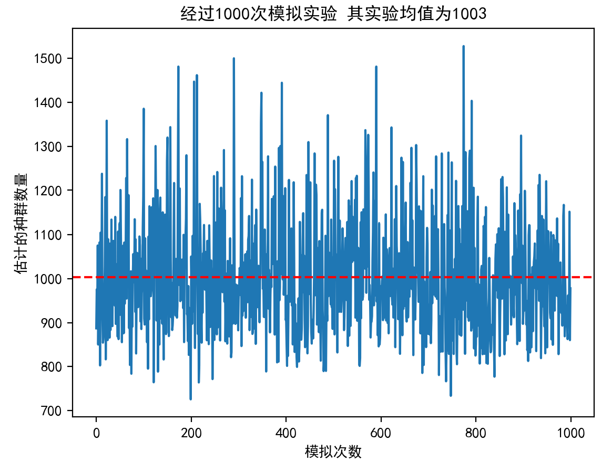
图2-15 多次模拟实验结果
6. 案例完整代码
import random
import matplotlib.pyplot as plt
# 指定中文字体
plt.rcParams["font.sans-serif"] = "SimHei" # 中文黑体
plt.rcParams['axes.unicode_minus'] = False # 解决保存图像时负号'-'显示为方块的问题
def marking_recapture():
# 初始生物种群构造
N = 1000 # 种群数量
xList = []
yList = []
for i in range(N):
x = random.uniform(-1, 1)
y = random.uniform(-1, 1)
xList.append(x)
yList.append(y)
# 第一次捕捉过程
xList1 = []
yList1 = []
xList2 = []
yList2 = []
for i in range(N):
if random.uniform(0, 1) <= 0.2:
xList1.append(xList[i])
yList1.append(yList[i])
else:
xList2.append(xList[i])
yList2.append(yList[i])
# 第二次捕捉过程
xListA = []
yListA = []
xListB = []
yListB = []
xListC = []
yListC = []
for i in range(len(xList1)):
if random.uniform(0, 1) <= 0.2:
xListA.append(xList1[i])
yListA.append(yList1[i])
else:
xListC.append(xList1[i])
yListC.append(yList1[i])
for i in range(len(xList2)):
if random.uniform(0, 1) <= 0.2:
xListB.append(xList2[i])
yListB.append(yList2[i])
else:
xListC.append(xList2[i])
yListC.append(yList2[i])
# 避免除以零，重新模拟
if len(xListA) == 0:
return marking_recapture()
n = len(xList1) * (len(xListA) + len(xListB)) / len(xListA)
return n
# 用循环进行多次模拟
n_sim = int(input("请输入要模拟的次数:"))
result = []
for i in range(n_sim):
result.append(marking_recapture())
average = sum(result) / n_sim
print(f"经过 {n_sim} 次有效模拟，估计的种群数量平均值为: {average:.0f}")
# 可视化多次模拟结果并保存图片
plt.plot(range(len(result)), result)
plt.axhline(average, color='r', linestyle='--')
plt.xlabel('模拟次数')
plt.ylabel('估计的种群数量')
plt.title(f'经过{n_sim}次模拟实验 其实验均值为{average:.0f}')
plt.savefig('multiple_simulations.png') # 保存多次模拟结果图
plt.show()2.7 案例总结与思考
1. 案例总结
计算思维进行问题求解是通过抽象、分解、模式识别、算法设计、自动化和泛化，将复杂问题转化为可计算、可执行的步骤。本案例通过标记重捕法模拟科学实验也遵循这样的过程。
（1）抽象
本案例抽象的目标是将复杂的生态学问题简化为可计算的模型。
- 忽略现实世界中种群分布的复杂细节（如个体行为、环境变化等），将种群抽象为一个由个体组成的集合。
- 每个个体用简单的属性表示，如坐标 (x, y) 和标记状态 marked。
- 捕捉过程抽象为随机事件，每个个体有固定的捕捉概率。
通过抽象，将复杂的生态学问题转化为一个可计算的数学模型，减少复杂性，使得问题更易于理解和解决。
（2）问题分解
将问题分解为多个子问题。
- 初始化种群：生成一定数量的个体，并随机分布在一个区域内。
- 第一次捕捉并标记：随机捕捉部分个体，并标记它们。
- 重新捕捉：再次随机捕捉个体，统计其中被标记的个体数量。
- 估算种群数量：根据标记重捕法的公式计算种群规模。
每个子任务可以进一步分解为更小的步骤，例如：初始化种群 → 生成个体 → 分配坐标 → 设置标记状态；捕捉个体 → 随机选择 → 更新标记状态。通过分解，复杂的任务被拆解为多个简单的子任务，使得问题更容易逐步解决。
（3）模式识别
模式识别的目的是识别问题中的规律和模式。
- 识别标记重捕法中的关键模式：捕捉过程是独立事件，个体被捕捉的概率相同；被标记的个体在重新捕捉中的比例与整个种群中被标记个体的比例相同。
- 识别公式中的模式：种群数量 N与第一次标记的个体数量 X、第二次捕捉的个体数量 Y、第二次捕捉中被标记的个体数量 Z之间的关系为：N=X×Y/Z。
模拟实验识别出标记个体与未标记个体的比例关系，并利用这一比例关系估算种群大小。通过模式识别，帮助理解问题的本质，并为算法设计提供依据。
（4）算法设计
在标记重捕法模拟中，设计了算法来模拟捕捉过程。
- 初始化种群：使用循环生成一定数量的个体，每个个体具有随机的坐标和初始标记状态。
- 第一次捕捉并标记：遍历种群中的每个个体，根据捕捉概率随机选择个体并标记。
- 重新捕捉：再次遍历种群，根据捕捉概率随机选择个体，并统计其中被标记的个体数量。
- 估算种群数量：根据公式 N=X×Y/Z计算种群规模。
- 使用随机数生成器（如 random.random()）模拟捕捉过程；多次模拟实验，验证公式的准确性。
算法设计将抽象、分解和模式识别的结果转化为可执行的步骤，使得问题能够通过计算机程序高效解决。
（5）自动化
通过编写 Python 程序，自动模拟捕捉过程、计算种群大小，并进行多次实验。使用循环结构实现多次模拟实验，减少了人为操作，提高了效率。
（6）泛化
在标记重捕法模拟中，可以将模拟方法推广到其他生态学问题，如鱼类种群估计、鸟类迁徙研究等。通过调整参数（如捕捉概率、种群大小等），能够适应不同的实验场景。通过泛化，不仅能够解决当前问题，还能够为未来的类似问题提供解决方案。
通过“抽象、分解、模式识别、算法设计、自动化和泛化”，标记重捕法模拟科学实验的过程得以高效实现。这种思维方式不仅适用于标记重捕法，还可以应用于其他科学实验和工程问题的求解。
2. 案例思考
（1）数据结构的选择
列表是Python中非常灵活的数据结构，适合存储和操作有序的数据。本案例中原始种群、捕捉、未捕捉种群位置均是由循环生成的随机数列表存储。请思考：还可以用什么数据结构实现多个数据的存储？
提示：可以使用元组存储个体坐标（不可变特性适合固定数据）；使用字典存储个体完整信息（如{'x': 0.5, 'y': 0.3, 'marked': True}）；使用集合存储已标记个体的唯一标识（如坐标哈希值，便于快速查询）。
（2）优化本案例程序
代码的可读性和模块化是编程的重要原则。通过将功能封装为函数，可以提高代码的复用性和可维护性。
请思考优化本案例程序：在“主程序”中输入要模拟的实验次数，将“多次模拟实验”定义为一个函数，在主程序中调用该函数，完成模拟实验。
2.8 举一反三
1. 模拟掷硬币实验
利用Python程序模拟掷硬币实验，探索概率和统计的奥秘。假设要模拟一枚硬币连续抛掷1000次的结果。请完成模拟实验，并将实验结果进行可视化表示。
实验步骤提示：
- 实验参数初始化：确定实验中掷硬币的次数，并设置正面和反面的计数器。
- 模拟掷硬币过程：对于每次掷硬币，随机选择“正面”或“反面”。
- 统计结果：统计正面和反面的出现次数。
- 可视化结果：创建一个条形图来展示正面和反面的出现次数。
- 分析结果：通过比较正面和反面的出现次数，可以分析硬币的公平性。
如图 2-17所示，展示了在1000次掷硬币的过程中，正面和反面出现的次数。
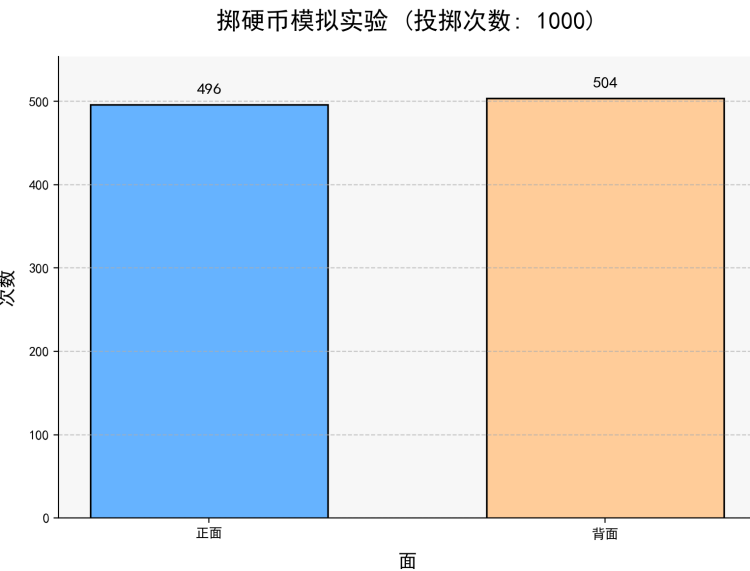
图2-16 模拟抛硬币概率
从图中可以看到，每次得到正面或反面的概率相当。这个实验也印证了伯努利实验的特点，即“每次试验只有两种结果且概率固定、各次试验相互独立”。
2. 生日悖论
根据直觉，班级中两个人生日相同的概率应该是很小的。但是实际上，如果某个班级里一共有23名学生，不考虑闰年，出现共享生日（生日相同）情况的概率超过了50%。并且，随着班级人数的增多，这个概率不断提高，当人数达到50人时，这个概率达到了97%。这种现象被称为“生日悖论”。
生日悖论是一个关于概率的经典问题，它提出了一个看似违反直觉的结论：在一个相对较小的群体中，两个人拥有相同生日的概率远高于人们的直觉预期。
使用 Python 进行生日悖论的科学实验，可以随机生成多个人的生日，然后计算在这些生日中至少有两个人生日相同的概率。
实验步骤提示：
- 使用Python的random模块模拟随机生日，并使用数据结构（如集合或列表）来存储和比较这些生日是否相同。
- 在每次模拟中，生成指定数量的随机生日，并检查是否有重复的生日，记录在每次模拟中是否找到相同生日的情况。通过循环结构模拟多次实验。
- 计算在所有模拟中找到相同生日的频率。使用这个频率来估计在给定群体大小下，至少有两个人生日相同的概率，分析结果。
- 数据结果可视化，使用图表来直观地展示概率是如何随着群体大小的改变而变化的。实验效果如图2-17所示。
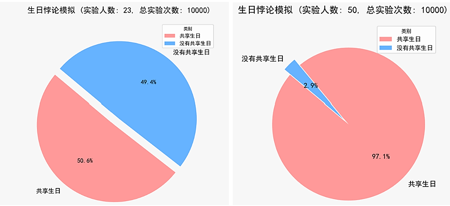
图2-17 概率随样本大小而变化
可见，当实验人数是23人时，本次实验存在共享生日的情况占总实验次数的大约50.6%；当实验人数是50人时，共享生日的占比高达97.1%。
生日悖论揭示了概率分布的有趣特性，即在相对较小的样本中，某些事件发生的概率可能比预期的要高。这种现象不仅在生日问题中出现，在其他领域也有类似的应用，例如密码学中的碰撞概率等。通过生日悖论的验证，可以更好地理解概率和统计在实际生活中的应用和重要性。
3. 蒙特卡罗法求花格透光率
“蒙特卡罗法”是一种统计模拟方法，是基于“随机数”的计算方法。例如，可以用蒙特卡罗法求圆的面积，可以想象，地面有一个正方形，内部有一个内切圆，拿了一袋豆子倒在正方形内，豆子的总数量为M，落入圆内的豆子数量为N，将正方形的面积记为Y，圆的面积记为X，可以得到如下公式： X=N/M*Y
求花格透光率的思路与上面的一致，可以理解为，统计在镂空部分的豆子数量，推算出镂空部分与花格总面积的比例，进而求出花格的透光率。
实验步骤提示：
- 定义模拟参数：确定圆形镂空部分的半径和模拟中使用的随机点的总数。
- 生成随机点：在花格的总面积范围内生成大量随机点，每个点代表一个豆子的随机出现位置。
- 判断点是否落在镂空部分：对于每个随机点，判断其是否落在圆形镂空圆内。（可以通过判断点到原点的距离是否小于或等于圆的半径来实现）
- 统计落在镂空部分的点数：统计所有落在圆镂空部分内的随机点的数量。
- 计算透光率：将落在镂空部分的点数除以总点数，得到的结果就是花格的透光率。
- 可视化模拟过程：创建一个图形，展示随机点在花格上的分布情况。
- 显示结果：在执行模拟和可视化的同时，打印出估算的透光率。
- 如图2-18所示，镂空部分用黑色圆形表示，落在圆形内的点用蓝色表示，而落在圆形外的点用红色表示。通过这种方法，可以直观地看到随机点的分布。
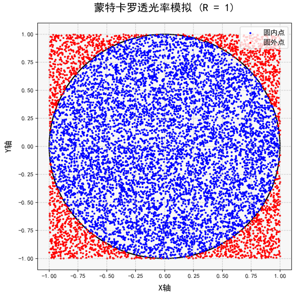
图2-18 蒙特卡洛模拟实验
根据蒙特卡罗方法的模拟结果，对于这个假设的花格模型（其中包含一个半径为1的圆形镂空部分），估算的透光率大约为79.60%。这个结果是基于10000个随机点的模拟得出的，因此它是一个近似值。通过增加模拟点的数量，可以得到更精确的透光率估计。